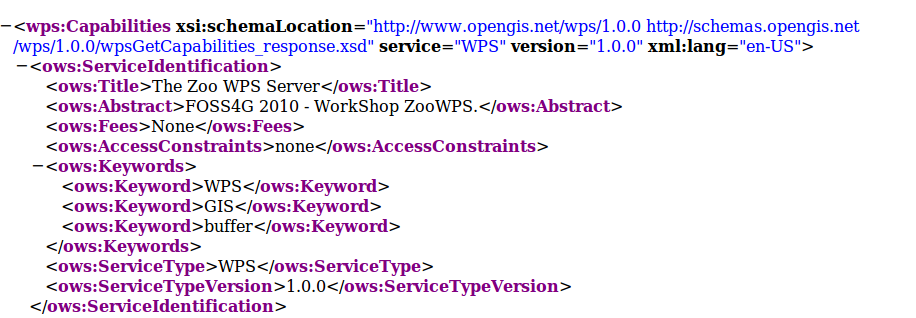
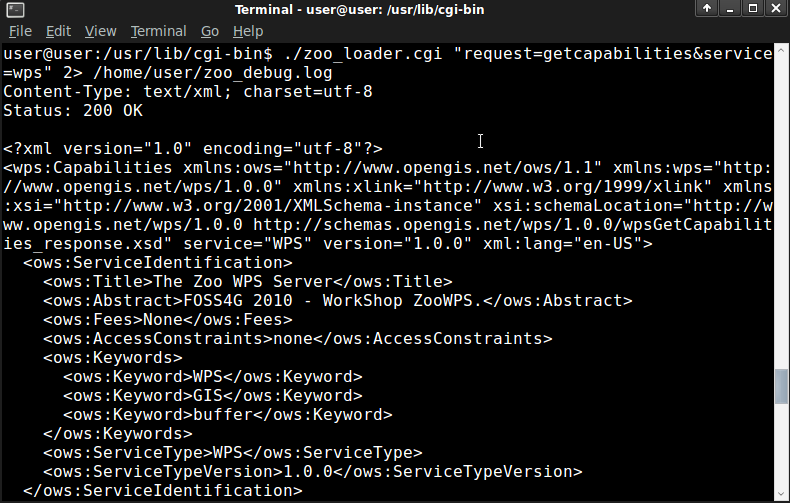

Using ZOO from an OSGeoLive virtual machine¶
Table of Contents
OSGeoLive is a live DVD and virtual machine based on Xubuntu that allows you to try a wide variety of open source geospatial software without installing anything. It is composed entirely of free software and include ZOO 1.0 this year, for testing purpose.
ZOO Kernel Installation¶
As already said in introduction, an OSGeoLive virtual machine image disk has
been installed on your computer, allowing you to use ZOO Kernel in a development
environment directly. Using a virtual machine image disk seems to be the simplest
way to use ZOO Kernel and to develop ZOO Services locally, as we can ensure that
everything requested for compiling C Services and running Python ones is available
and ready to use. Every ZOO related material and source code have been placed in
/home/user/zoows directory. We will work inside it during this workshop. As
the binary version of ZOO Kernel is already compiled and stored in /home/user/zoows/sources/zoo-kernel,
you only have to copy two important files inside the /usr/lib/cgi-bin
directory : zoo_loader.cgi and the main.cfg in order to make ZOO Kernel
available, using the following commands :
sudo cp ~/zoows/sources/zoo-kernel/zoo_loader.cgi /usr/lib/cgi-bin
sudo cp ~/zoows/sources/zoo-kernel/main.cfg /usr/lib/cgi-bin
Please note that we will talk about ZOO Kernel or zoo_loader.cgi script without
any distinction during this workshop.
The main.cfg file contains metadata informations about the identification and
provider but also some important settings. The file is composed of various sections,
namely main, identification and provider per default. Obviously, you are free to add
new sections to the file if you need them for a specific Service. Nevertheless, you
have to know that the env and lenv sections name are used in a specific way.
The env section lets you define environment variables that your Service requires
during its runtime. For instance, if your Service requires to access to a X server
running on framebuffer, then you will have to set the DISPLAY environnement
variably, in this case you would add DISPLAY=:1 line in your env section.
As for the env section, there is the section lenv where specific informations about status informations of a running Service will be written by the ZOO Kernel or the ZOO Services. For instance, when your service failed, you can set the value for message in lenv to see it displayed in the Status node of the ExecuteResponse returned back to the client. If your service will take long time and can get informations about processing status, you can then set a value between 0 and 100 to status in lenv to represent the percentage completed of the running Service task, we will talk deeper about this later in this workshop.
Please take a look to your local file main.cfg file. Three important parameters are commented bellow:
- serverAddress : The url to access to the ZOO Kernel
- tmpPath : The full path to store temporary files
- tmpUrl : The url path relative to serverAddress to access temporary directory.
The values of the main.cfg file used from the running virtual machine are the following :
serverAddress=http://localhost/zoo
tmpPath=/var/www/temp
tmpUrl=../temp/
You could have noticed that the tmpUrl is a relative url from serverAddress,
so it must be a directory. Even if ZOO Kernel can be used with the full url of
the zoo_loader.cgi script, for better readability and fully functional ZOO Kernel,
you have to modify the default Apache configuration in order to be able to use the
http://localhost/zoo/ url directly.
First, please create a zoo directory in the existing /var/www which is
used by Apache as the DocumentRoot. Then, please edit the /etc/apache2/sites-available/default
configuration file and add the following lines after the Directory block related to /var/www directory :
<Directory /var/www/zoo/>
Options Indexes FollowSymLinks MultiViews
AllowOverride All
Order allow,deny
allow from all
</Directory>
Now create a small .htaccess file in the /var/www/zoo containing the following lines:
RewriteEngine on
RewriteRule call/(.*)/(.*) /cgi-bin/zoo_loader.cgi?request=Execute&service=WPS&version=1.0.0&Identifier=$1&DataInputs=sid=$2&RawDataOutput=Result [L,QSA]
RewriteRule (.*)/(.*) /cgi-bin/zoo_loader.cgi?metapath=$1 [L,QSA]
RewriteRule (.*) /cgi-bin/zoo_loader.cgi [L,QSA]
For this last file to be taken into account by Apache, you must activate the rewrite Apache module by copying a load file as bellow :
sudo cp /etc/apache2/mods-available/rewrite.load /etc/apache2/mods-enabled/
Or using the a2enmod tool this way :
a2enmod rewrite
Now you should be able to access the ZOO Kernel using a simplified by restarting your Apache Web server :
sudo /etc/init.d/apache2 restart
Two other softwares form the OSGeoLive environment will be used during this workshop. MapServer will first be used to provide WFS input data for the ZOO Services we are going to develop. The MapServer dataset providen by Orkney (japanese regions polygons) will be passed to our service during section 4.
OpenLayers library is also available on the OSGeoLive virtual machine image disk, and it will be used during section 4, for building a simple WPS client application able to query the newly developed ZOO Services.
As we planned to use OGR C-API and Python module of the GDAL library, we will need the corresponding header files, libraries and associated files. Hopefully everything was already available per default and so ready to use on the OSGeoLive packaging.
Testing the ZOO installation with GetCapabilities¶
You can now simply query ZOO Kernel using the following request from your Internet browser:
http://localhost/cgi-bin/zoo_loader.cgi?Request=GetCapabilities&Service=WPS
You should then get a valid Capabilities XML document, as the following :
{kind=link}
Please note that no Process node is returned in the ProcessOfferings section, as no ZOO Service is available yet. You can also proceed to a GetCapabilities request from the command line, using the following command:
cd /usr/lib/cgi-bin
./zoo_loader.cgi “request=GetCapabilities&service=WPS”
The same result as in your browser will be returned, as shown in the following screenshot:
{kind=link}
Invoking ZOO Kernel from command line can be helpful during development process of new Services.
Preparing your ZOO Services Provider directory¶
In order to simplify the task, we will first comment the directory structure which should be used when creating a new Services Provider :
- The main Services Provider directory including :
- A
cgi-envdirectory which will contain all the zcfg metadata files and the service shared object (C Shared Library or Python module)- The
Makefileand the*cfiles needed to compile your Services Provider.
Please create a ws_sp main Services Provider directory in the existing zoo-services one located in /home/user/zoows/sources/, respecting the tree above .
mkdir -p /home/user/zoows/sources/zoo-services/ws_sp/cgi-env
The Makefile and the code of the C and Python Service Shared Object will be detailed in the next sections.